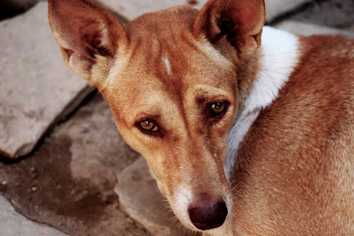
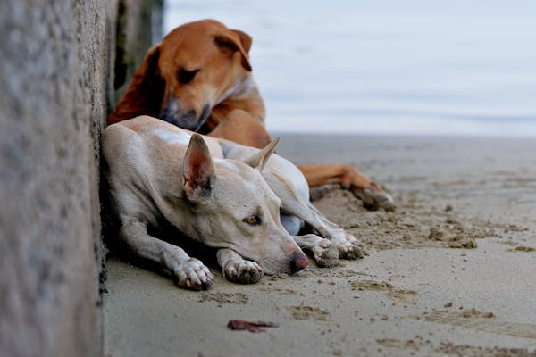
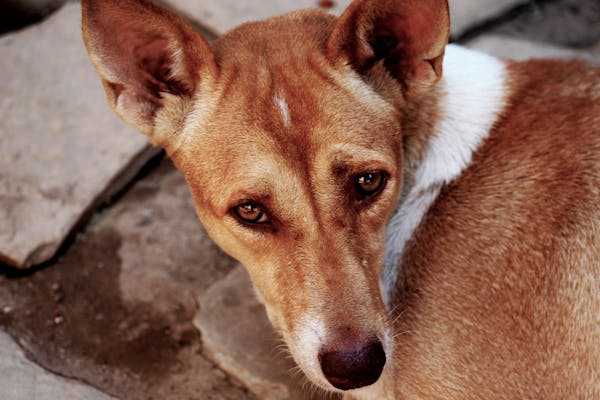
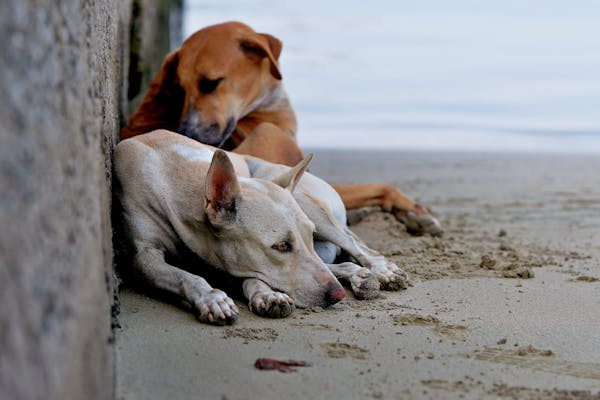

Welcome to RescueLink
Our mission is to rescue street dogs, prevent road accidents, and support shelters while facilitating donations and adoptions. Navigate through our website to explore more!
About Street Dogs
Street dogs are often left to fend for themselves, facing challenges such as lack of food, diseases, and the dangers of urban environments. These animals are highly resilient but need our help to survive and thrive.
Our initiative aims to bring awareness, safety, and care to street dogs while building a supportive community that works together to improve their lives.
Gallery
 



How You Can Help
- Report a street dog in need of help through our Rescue Coordination page.
- Make a donation to support shelters and medical care on our Donations page.
- Adopt a dog and give them a loving home through our Adoption platform.
Watch Our India has a Big Stray Dogs Problem
If you live in India, there rarely would've been a single day passing by without you facing a stray dog. In fact, it's not just about them being everywhere, it's about the fact that they keep attacking different people. Many incidents of loss of lives have been reported due to stray dog attacks in various places. But the question is why all this is happening? Why no talks about this issue? What can be the way out? Watch this video to find out where I talk about this strange Stray dogs problem in India..